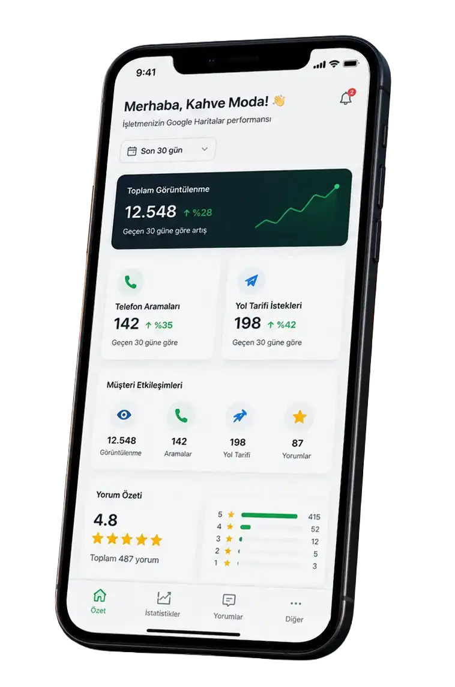

Kısıtlı Bölge Sıkışması
İşletmeniz sadece kendi caddenizde üst sıralarda çıkıyor olabilir. Hedefimiz, bu görünürlüğü yan mahallelere ve çevre bölgelere yayarak yeni müşterilere ulaşmaktır.
Aramalar hangi konumdan gelirse gelsin, algoritmaların önerdiği işletme olun. Haritalardaki potansiyeli gerçek müşteriye dönüştürün.
Google sizi sadece harita profilinizle değerlendirmez. Biz, tüm dijital varlığınızı Google Haritalar görünürlüğünüzü besleyecek şekilde yönetiriz.

Google Haritalar'da yer almak, müşterilerinizin sizi aradığı her sokakta ve her mahallede ilk sırada olduğunuz anlamına gelmez. Google algoritması; eksik profilleri, güncellenmeyen içerikleri ve bayat yorumları cezalandırarak sizi sadece dar bir alana sıkıştırır.
Gerçek yerel büyümenin önündeki 3 büyük engel:
İşletmeniz sadece kendi caddenizde üst sıralarda çıkıyor olabilir. Hedefimiz, bu görünürlüğü yan mahallelere ve çevre bölgelere yayarak yeni müşterilere ulaşmaktır.
Çok geniş bir hizmet alanı seçmek profilinizin gücünü dağıtır. Nokta atışı mahalle optimizasyonu, Google algoritmasında gerçek bir otorite kurmanızı sağlar.
Liste başında olmak tek başına yetmez. Profilinizde güncel yorumlar, profesyonel görseller ve doğru kategoriler yoksa, listede üstte olsanız bile müşteri rakiplerinizi seçer.
Sıralamanız, arayanın konumuna göre değişir. Görünürlük Röntgeni bunu mahalle mahalle görünür kılar — Kadıköy / Moda'da örnek bir kafe senaryosu: aynı arama, farklı noktalarda farklı sıralama. Yeşil iyi, kırmızı zayıf görünürlük bandını temsil eder.
Bu alan örnek gösterim / demo amaçlıdır.
Mahalle mahalle nerede görünüyor, nerede kayboluyorsunuz — harita üzerinde.
Hedef bölgenizdeki aramaların yüzde kaçında ilk 3'te çıkıyorsunuz — tek sayıyla.
Aynı haritada rakipleriniz nerede güçlü, siz nerede açık veriyorsunuz.
ChatGPT, Gemini ve Google yapay zekâ özetleri işletmenizi öneriyor mu?
Profil tamlığı, kategori doğruluğu ve isim-adres-telefon tutarlılığı denetimi.
Üç net adımda: önce veriyi görürüz, sonra profilinizi düzenleriz, her ay izler ve iyileştiririz.
Nerede görünmüyorsunuz, müşteri nereye gidiyor — grid ve profil verisiyle net ortaya koyarız.
Profil, kategori, görsel, yorum ve web sitenizi tek sistem olarak düzenleriz.
Görünürlüğünüzü izler, yorumlara yanıt verir ve her ay somut aksiyon alırız.
Hiper-yerel odak, profil disiplini ve düzenli optimizasyonla mümkün olan senaryolar — somut metriklerle.
Google Haritalar yönetimi, süreç ve beklentiler hakkında net cevaplar.
Profil açıp bırakmak yetmez: kategori seçimi, yorum tazeliği, NAP tutarlılığı ve grid takibi sürekli güncellenen bir iş. Günlük operasyonunuz varken algoritma değişimlerini izlemek zordur; ajans bu disiplini sizin adınıza kurar.
Grid, aynı aramanın farklı sokaklarda nasıl sıralandığını gösterir. Dükkan önünde görünürken çevre mahallede kayboluyorsanız, hizmet alanı ve içerik stratejinizi buna göre ayarlarız.
Profil düzenlemeleri birkaç hafta içinde sinyal üretmeye başlar; telefon ve yol tarifi eğilimleri genelde 60–90 gün içinde okunabilir hale gelir. Süre sektör ve rekabet yoğunluğuna göre değişir.
Hayır. Sıra numarası yerine telefon araması, yol tarifi, profil etkileşimi ve seçilme oranına odaklanırız. Grid ve aylık raporlarla nerede güçlendiğinizi şeffaf paylaşırız.
Yanıt hızı, yorum tazeliği ve hizmet adının doğal geçtiği içerikleri hedefleriz. Sahte veya manipülatif yöntemler kullanmayız; sürdürülebilir bir yorum akışı kurarız.
İşletme büyüklüğü, lokasyon sayısı ve ihtiyaç duyulan hizmet kapsamına göre aylık paketler sunarız. Ön değerlendirme sonrası net teklif paylaşılır.
İstanbul genelinde hizmet veriyoruz; strateji her zaman hedef mahalle ve ilçe bazında kurulur. Tek bir geniş yarıçap yerine gerçekten hizmet verdiğiniz bölgelere odaklanırız.
Evet, ancak web sitesi ve harita profili uyumlu olduğunda sonuçlar güçlenir. Gerekirse önce profil ve grid odaklı başlayıp web tarafını aşamalı ekleriz.
İşletmenizi birlikte güçlendirelim.